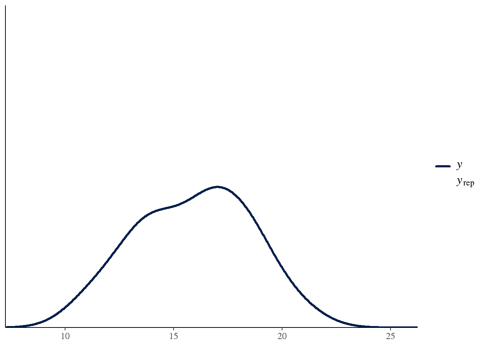
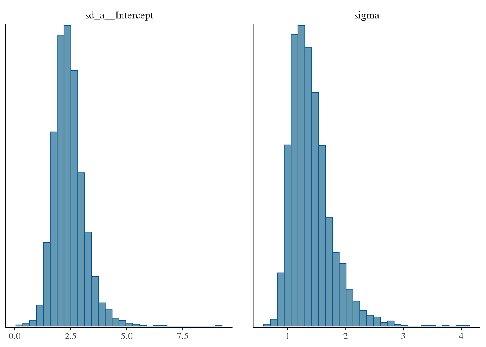

Chapter 19: Bayesian Implementation of GLMM
Bayesian Estimation with brms and Stan
2026-05-17
Source:vignettes/chapter-19-bayesian-glmm.qmd
1 Overview
Chapter 19 introduces the Bayesian approach to GLMMs. The Bayesian framework treats all unknowns
- fixed effects \(\pmb{\beta}\),random effects \(\mathbf{b}\), and variance components \(\pmb{\theta}\)
- as random variables with prior distributions.
Bayes’ Theorem for mixed models:
\[p(\pmb{\beta}, \mathbf{b}, \pmb{\theta} \mid \mathbf{y}) \propto p(\mathbf{y} \mid \pmb{\beta}, \mathbf{b}, \pmb{\theta}) \cdot p(\pmb{\beta}) \cdot p(\mathbf{b} \mid \pmb{\theta}) \cdot p(\pmb{\theta})\]
Key advantages over REML/ML:
- Full posterior distributions for all parameters (not just point estimates)
- Exact small-sample inference (no asymptotic approximations)
- Natural propagation of uncertainty to predictions
- Handles complex variance structures and non-standard models
2 Prior Specification
Typical weakly informative priors for GLMMs:
Code
# Using brms (requires Stan backend)
if (requireNamespace("brms", quietly = TRUE)) {
priors <- brms::prior(normal(0, 10), class = b) +
brms::prior(normal(0, 10), class = Intercept) +
brms::prior(cauchy(0, 2.5), class = sd)
}3 Bayesian One-Way Random Effects Model
Code
if (requireNamespace("brms", quietly = TRUE)) {
data(DataSet10.1)
DataSet10.1$a <- factor(DataSet10.1$a)
# Frequentist reference
fit_freq <- lme4::lmer(y ~ 1 + (1 | a), data = DataSet10.1)
cat("REML estimates:\n")
print(as.data.frame(lme4::VarCorr(fit_freq)))
# Bayesian equivalent
fit_bayes <- brms::brm(
y ~ 1 + (1 | a),
data = DataSet10.1,
prior = brms::prior(normal(0, 10), class = Intercept) +
brms::prior(cauchy(0, 2.5), class = sd),
chains = 4,
iter = 2000,
seed = 42,
silent = 2
)
summary(fit_bayes)
}REML estimates:
grp var1 var2 vcov sdcor
1 a (Intercept) <NA> 5.511402 2.347638
2 Residual <NA> <NA> 1.530833 1.237268
SAMPLING FOR MODEL 'anon_model' NOW (CHAIN 1).
Chain 1:
Chain 1: Gradient evaluation took 1.3e-05 seconds
Chain 1: 1000 transitions using 10 leapfrog steps per transition would take 0.13 seconds.
Chain 1: Adjust your expectations accordingly!
Chain 1:
Chain 1:
Chain 1: Iteration: 1 / 2000 [ 0%] (Warmup)
Chain 1: Iteration: 200 / 2000 [ 10%] (Warmup)
Chain 1: Iteration: 400 / 2000 [ 20%] (Warmup)
Chain 1: Iteration: 600 / 2000 [ 30%] (Warmup)
Chain 1: Iteration: 800 / 2000 [ 40%] (Warmup)
Chain 1: Iteration: 1000 / 2000 [ 50%] (Warmup)
Chain 1: Iteration: 1001 / 2000 [ 50%] (Sampling)
Chain 1: Iteration: 1200 / 2000 [ 60%] (Sampling)
Chain 1: Iteration: 1400 / 2000 [ 70%] (Sampling)
Chain 1: Iteration: 1600 / 2000 [ 80%] (Sampling)
Chain 1: Iteration: 1800 / 2000 [ 90%] (Sampling)
Chain 1: Iteration: 2000 / 2000 [100%] (Sampling)
Chain 1:
Chain 1: Elapsed Time: 0.037 seconds (Warm-up)
Chain 1: 0.038 seconds (Sampling)
Chain 1: 0.075 seconds (Total)
Chain 1:
SAMPLING FOR MODEL 'anon_model' NOW (CHAIN 2).
Chain 2:
Chain 2: Gradient evaluation took 8e-06 seconds
Chain 2: 1000 transitions using 10 leapfrog steps per transition would take 0.08 seconds.
Chain 2: Adjust your expectations accordingly!
Chain 2:
Chain 2:
Chain 2: Iteration: 1 / 2000 [ 0%] (Warmup)
Chain 2: Iteration: 200 / 2000 [ 10%] (Warmup)
Chain 2: Iteration: 400 / 2000 [ 20%] (Warmup)
Chain 2: Iteration: 600 / 2000 [ 30%] (Warmup)
Chain 2: Iteration: 800 / 2000 [ 40%] (Warmup)
Chain 2: Iteration: 1000 / 2000 [ 50%] (Warmup)
Chain 2: Iteration: 1001 / 2000 [ 50%] (Sampling)
Chain 2: Iteration: 1200 / 2000 [ 60%] (Sampling)
Chain 2: Iteration: 1400 / 2000 [ 70%] (Sampling)
Chain 2: Iteration: 1600 / 2000 [ 80%] (Sampling)
Chain 2: Iteration: 1800 / 2000 [ 90%] (Sampling)
Chain 2: Iteration: 2000 / 2000 [100%] (Sampling)
Chain 2:
Chain 2: Elapsed Time: 0.039 seconds (Warm-up)
Chain 2: 0.038 seconds (Sampling)
Chain 2: 0.077 seconds (Total)
Chain 2:
SAMPLING FOR MODEL 'anon_model' NOW (CHAIN 3).
Chain 3:
Chain 3: Gradient evaluation took 8e-06 seconds
Chain 3: 1000 transitions using 10 leapfrog steps per transition would take 0.08 seconds.
Chain 3: Adjust your expectations accordingly!
Chain 3:
Chain 3:
Chain 3: Iteration: 1 / 2000 [ 0%] (Warmup)
Chain 3: Iteration: 200 / 2000 [ 10%] (Warmup)
Chain 3: Iteration: 400 / 2000 [ 20%] (Warmup)
Chain 3: Iteration: 600 / 2000 [ 30%] (Warmup)
Chain 3: Iteration: 800 / 2000 [ 40%] (Warmup)
Chain 3: Iteration: 1000 / 2000 [ 50%] (Warmup)
Chain 3: Iteration: 1001 / 2000 [ 50%] (Sampling)
Chain 3: Iteration: 1200 / 2000 [ 60%] (Sampling)
Chain 3: Iteration: 1400 / 2000 [ 70%] (Sampling)
Chain 3: Iteration: 1600 / 2000 [ 80%] (Sampling)
Chain 3: Iteration: 1800 / 2000 [ 90%] (Sampling)
Chain 3: Iteration: 2000 / 2000 [100%] (Sampling)
Chain 3:
Chain 3: Elapsed Time: 0.039 seconds (Warm-up)
Chain 3: 0.033 seconds (Sampling)
Chain 3: 0.072 seconds (Total)
Chain 3:
SAMPLING FOR MODEL 'anon_model' NOW (CHAIN 4).
Chain 4:
Chain 4: Gradient evaluation took 9e-06 seconds
Chain 4: 1000 transitions using 10 leapfrog steps per transition would take 0.09 seconds.
Chain 4: Adjust your expectations accordingly!
Chain 4:
Chain 4:
Chain 4: Iteration: 1 / 2000 [ 0%] (Warmup)
Chain 4: Iteration: 200 / 2000 [ 10%] (Warmup)
Chain 4: Iteration: 400 / 2000 [ 20%] (Warmup)
Chain 4: Iteration: 600 / 2000 [ 30%] (Warmup)
Chain 4: Iteration: 800 / 2000 [ 40%] (Warmup)
Chain 4: Iteration: 1000 / 2000 [ 50%] (Warmup)
Chain 4: Iteration: 1001 / 2000 [ 50%] (Sampling)
Chain 4: Iteration: 1200 / 2000 [ 60%] (Sampling)
Chain 4: Iteration: 1400 / 2000 [ 70%] (Sampling)
Chain 4: Iteration: 1600 / 2000 [ 80%] (Sampling)
Chain 4: Iteration: 1800 / 2000 [ 90%] (Sampling)
Chain 4: Iteration: 2000 / 2000 [100%] (Sampling)
Chain 4:
Chain 4: Elapsed Time: 0.04 seconds (Warm-up)
Chain 4: 0.042 seconds (Sampling)
Chain 4: 0.082 seconds (Total)
Chain 4: Family: gaussian
Links: mu = identity
Formula: y ~ 1 + (1 | a)
Data: DataSet10.1 (Number of observations: 24)
Draws: 4 chains, each with iter = 2000; warmup = 1000; thin = 1;
total post-warmup draws = 4000
Multilevel Hyperparameters:
~a (Number of levels: 12)
Estimate Est.Error l-95% CI u-95% CI Rhat Bulk_ESS Tail_ESS
sd(Intercept) 2.43 0.68 1.34 3.99 1.00 903 1190
Regression Coefficients:
Estimate Est.Error l-95% CI u-95% CI Rhat Bulk_ESS Tail_ESS
Intercept 15.78 0.79 14.23 17.35 1.00 922 1169
Further Distributional Parameters:
Estimate Est.Error l-95% CI u-95% CI Rhat Bulk_ESS Tail_ESS
sigma 1.40 0.35 0.92 2.26 1.00 968 1233
Draws were sampled using sampling(NUTS). For each parameter, Bulk_ESS
and Tail_ESS are effective sample size measures, and Rhat is the potential
scale reduction factor on split chains (at convergence, Rhat = 1).4 Posterior Predictive Check
Code
if (requireNamespace("brms", quietly = TRUE)) {
brms::pp_check(fit_bayes, ndraws = 50)
}
5 Posterior for Variance Components
Code
if (requireNamespace("brms", quietly = TRUE)) {
brms::mcmc_plot(fit_bayes, variable = c("sd_a__Intercept", "sigma"),
type = "hist")
}
6 Key Takeaways
-
brms::brm()fits Bayesian GLMMs with the same formula syntax aslme4. - Posterior distributions replace point estimates + standard errors.
-
brms::pp_check()provides graphical posterior predictive checks. - Weakly informative priors (
normal(0, 10),cauchy(0, 2.5)) stabilise estimation without strongly influencing the posterior when data are informative.
7 References
Stroup, W. W., Ptukhina, M., and Garai, S. (2024). Generalized Linear Mixed Models: Modern Concepts, Methods and Applications (2nd ed.). CRC Press.